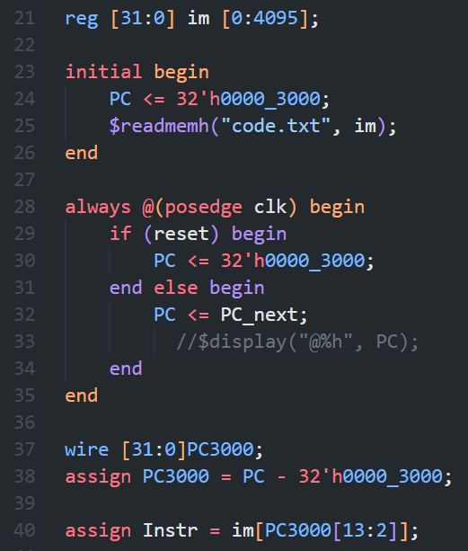
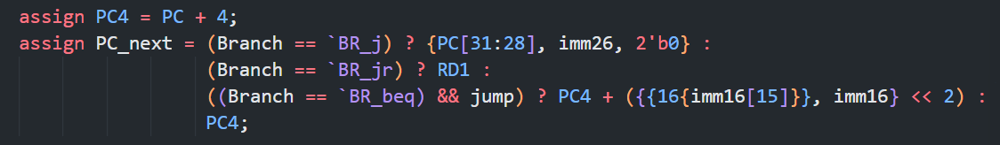
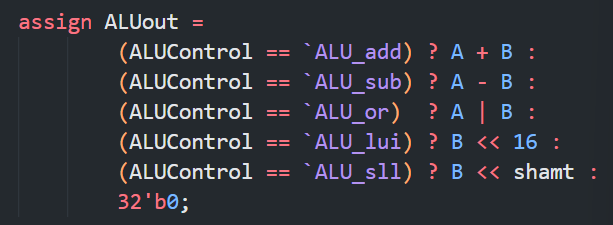
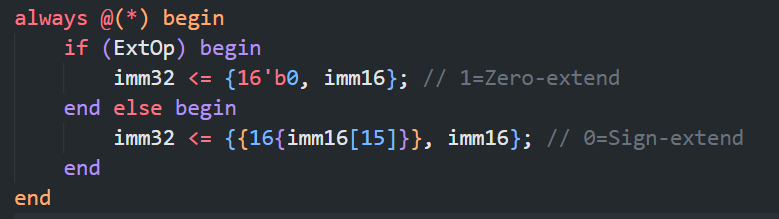

⌈BUAA CO⌋ p4 课下记录
在 P3 设计的基础上，为了方便 Verilog 表达，我做了些许改动。整体架构参考前辈 roife 仓库中的设计。
CPU 设计概述
总体的实现流程大致就是先分模块编写各部分的代码，然后在顶层定义一堆 wire ，并实例化各子模块。在两端口上接入同一 wire 以模拟 Logisim 中的连线操作。
绝大部分的设计和 P3 保持一致。不同的地方我会结合具体实现在下面指出。
IFU: 指令单元
IFU的接口如下：
| 信号名 | 位宽 | 方向 | 备注 |
|---|---|---|---|
clk |
1 | I | |
reset |
1 | I | |
PC_next |
32 | I | 下一条执行指令的地址 |
Instr |
32 | O | 当前执行的指令 |
PC |
32 | O | 当前执行指令的地址 |
rs |
5 | O | |
rt |
5 | O | |
rd |
5 | O | |
imm16 |
16 | O | |
imm26 |
26 | O | |
func |
6 | O | |
opcode |
6 | O | |
shamt |
6 | O |
其实是为了让顶层更简洁，把分线器也接到 im 后面，成为 IFU 的一部分了。
关于偏移 3000 这件事。我的实现是在初始时和复位时都将 PC 设为 0x0000_3000 ，而在取指前先减 3000 。如下图所示：

我迟迟调不过和这一部分的关系不小。一方面我没有看教程里对 IM 和 DM 的容量要求，另一方面一开始也没写 -3000 。这让我虽能通过中测，却无法通过弱侧，因此与首发的 P4 失之交臂。
NPC: 次地址计算单元
NPC 的接口如下：
| 信号名 | 位宽 | 方向 | 备注 |
|---|---|---|---|
PC |
32 | I | 当前指令的地址 |
imm26 |
26 | I | |
imm16 |
16 | I | |
RD1 |
32 | I | 用于 jr 指令跳回原指令的位置 |
Branch |
3 | I | 判断当前指令的类型 |
jump |
1 | I | 判断是否符合跳转的条件 |
PC_next |
32 | O | 下条指令的地址 |
PC4 |
32 | O | PC + 4 |
根据 Branch 的类型选择下一个指令的地址。

用三目运算符模拟电路中的多路选择器。
ALU: 计算单元
ALU 的接口如下：
| 信号名 | 位宽 | 方向 | 备注 |
|---|---|---|---|
ALUControl |
3 | I | 运算种类，详情见下表 |
A |
32 | I | |
B |
32 | I | |
shamt |
6 | I | 位移量 |
ALUout |
32 | O | ALU 运算结果 |
根据 ALUControl 信号，输出 A 和 B 进行对应运算后的结果。
利用宏 ALU_xxx ，降低维护和调试的难度。

GRF: 寄存器堆
GRF的接口如下：
| 信号名 | 位宽 | 方向 | 备注 |
|---|---|---|---|
A1 |
5 | I | 地址1，读出寄存器数据到 RD1 |
A2 |
5 | I | 地址2，读出寄存器数据到 RD2 |
A3 |
5 | I | 写地址 |
clk |
1 | 1 | |
reset |
1 | I | |
RF_enable |
1 | I | 写使能信号 |
W_Data |
32 | I | 写入的内容 |
PC |
32 | I | 当前指令地址（便于输出 $display 信息） |
RD1 |
32 | O | A1 对应的数据 |
RD2 |
32 | O | A2 对应的数据 |
DM: 内存组
DM 的接口如下：
| 信号名 | 位宽 | 方向 | 备注 |
|---|---|---|---|
clk |
1 | I | |
reset |
1 | I | |
DM_enable |
1 | I | 写使能 |
Address |
32 | I | 访问的内存地址 |
Data |
32 | I | |
PC |
32 | I | 当前指令地址（便于输出 $display 信息） |
RD |
32 | O | 读出内存的数据 |
EXT: 扩展单元
用于将
| 信号名 | 位宽 | 方向 | 备注 |
|---|---|---|---|
imm16 |
16 | I | 原立即数 |
ExtOp |
1 | I | 扩展类型（1: 零扩展 | 0: 符号扩展） |
imm32 |
32 | O | 扩展后的立即数 |
利用 Verilog 中 {... , ... , ...} 语句进行拼接。

CMP: 比较单元
将原属 ALU 的比较功能单独拆了出来。接口如下：
| 信号名 | 位宽 | 方向 | 备注 |
|---|---|---|---|
RD1 |
32 | I | 参与比较的数 1 （读自 GRF） |
RD2 |
32 | I | 参与比较的数 2 （读自 GRF） |
type |
32 | I | 指令类型 |
jump |
1 | O | 根据指令类型决定是否跳转 |
CTRL: 控制器
控制器接口如下：
| 信号 | 位宽 | 方向 | 备注 |
|---|---|---|---|
opcode |
6 | I | 指令的 31-26 位 |
func |
6 | I | 指令的 5-0 位 |
type |
32 | O | 当前指令的类型 |
Branch |
3 | O | 当前指令对应的跳转类型 |
A3_Sel |
3 | O | 决定 A3 该填入什么信号 |
WD_Sel |
3 | O | 决定 GRF 的 WD 该填入什么信号 |
RF_enable |
1 | O | GRF 写使能 |
DM_enable |
1 | O | DM 写使能 |
ExtOp |
1 | O | EXT 的扩展类型 |
ALUSelImm |
1 | O | 决定 ALU 的 B 填入 EXTout 还是 RD2 |
ALUControl |
3 | O | ALU 的运算类型 |
简单来说就是把各指令对应的信号通路上对应的信号点亮。
小结
照理来说，搭完了 Logisim 版本的单周期CPU，再去考虑用 Verilog 实现应该是很容易的事，毕竟只是对着图纸连连线嘛。然鹅我就是在这里翻车了，只给自己留半天的时间写代码……剩最后十分钟时看着无法通过的那个点，心中只剩绝望。
这边搬一张发在自己puq里的图，警示后人。
测试方案
警示后人：不要直接用大模型给你反编译出的指令！我直接用了，误以为 MARS 运行结果和我的程序不一致，浪费了大量的调试时间。
不如直接自己编写 MIPS 指令，转成十六进制码再导入。
思考题
Q： 阅读下面给出的 DM 的输入示例中（示例 DM 容量为 4KB，即 32bit × 1024字），根据你的理解回答，这个 addr 信号又是从哪里来的？地址信号 addr 位数为什么是 [11:2] 而不是 [9:0] ？

A： ALU 的计算结果 ALUout；因为按字节寻址时应该省略后两位，达到除以
至于表格的具体设计，则因人而异，可以记录下 指令对应的控制信号如何取值，也可以记录下控制信号每种取值所对应的指令
Q： 思考上述两种控制器设计的译码方式，给出代码示例，并尝试对比各方式的优劣。
A： 代码示例：
1 | |
1 | |
前者更直观，后者更便于维护。
Q： 在相应的部件中，复位信号的设计都是 同步复位，这与 P3 中的设计要求不同。请对比 同步复位 与 异步复位 这两种方式的 reset 信号与 clk 信号优先级的关系。
A： 异步复位中 reset > clk，同步复位中 clk > reset。
Q： C 语言是一种弱类型程序设计语言。C 语言中不对计算结果溢出进行处理，这意味着 C 语言要求程序员必须很清楚计算结果是否会导致溢出。因此，如果仅仅支持 C 语言，MIPS 指令的所有计算指令均可以忽略溢出。 请说明为什么在忽略溢出的前提下，addi 与 addiu 是等价的，add 与 addu 是等价的。提示：阅读《MIPS32® Architecture For Programmers Volume II: The MIPS32® Instruction Set》中相关指令的 Operation 部分。
A： 它们都没有对溢出位进行处理，故运算结果等价。